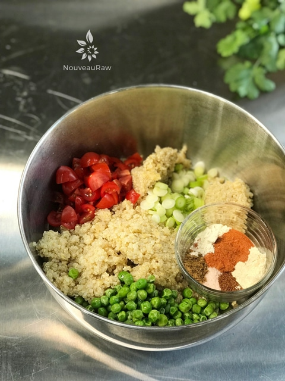

Spanish Quinoa
~ raw, cooked, gluten-free, grain-free ~
This recipe is my take on Spanish rice. In the past, I have made a similar recipe using “riced” cabbage, which you can find (here). I typically don’t eat rice, so I decided to make this dish with quinoa. You have the option of using raw sprouted quinoa or cooked quinoa. Use whatever method suits your digestion.
Back in the day when I used to frequent Mexican restaurants, I often found the Spanish rice lacking flavor and would end up dumping salsa over my beans and rice to make it more flavorful.
At home, especially these days as I have become more confident in using spices… I am not afraid to add spice… I believe that it is important to spice our foods, not only for flavor but also nutritionally.
Take cumin for instance… it gives this dish a nutty, peppery flavor and research has shown that cumin may stimulate the secretion of pancreatic enzymes, compounds necessary for proper digestion and nutrient assimilation. (1) So never take a dash or this or a dash of that for granted.
Outside of the spice mix used to create that Spanish flavor, there is another key ingredient that shouldn’t be omitted and that is the olive oil. I only used 2 Tbsp for the whole recipe, but it is vital in keeping the dish nice and moist.
Is quinoa a grain? A cereal? A Grass?
Many people think it’s a grain, but quinoa is actually a seed. “Quinoa (pronounced “keenwah”) is a seed that is harvested from a species of a plant called goosefoot. It is officially a seed and part of a group of pseudocereals, making it neither a cereal nor a grain, and more closely related to spinach and beets than to cereals or grains. “(1) It is naturally gluten-free, packed with vitamin B, magnesium, calcium, and other nutrients. A single serving of quinoa is 1/4 cup and contains 6 grams of protein. So eat up.
There are many wonderful ways to enjoy this recipe. Use it as a side dish, use it as a layer in building tacos, or try it in my Spanish Quinoa and Refried “Bean” Burrito. Enjoy my friends!
Ingredients:
yields 4 1/4 cups
- 3 cups (464 g) cooked quinoa
- 1/2 -1 cup (72-144 g) fresh or frozen peas
- 4 (24 g) Spring green onion, thinly sliced
- 3 Tbsp (30 g) Sun-Dried Tomato Powder
- 2 Tbsp (19 g) extra virgin olive oil
- 1 tsp (5 g) liquid sweetener
- 1 tsp (7 g) Himalayan pink salt
- 3/4 tsp (1 g) Mexican chili powder
- 1/2 tsp (2 g) ground cumin
- 1/4 tsp (1 g) onion powder
- 1 clove garlic, crushed (or 3 g powder)
- 1/2 cup (87 g) diced tomato
Preparation:
- Prepare the red quinoa, whether it be by sprouting (raw) or cooking.
- After thoroughly rinsing the quinoa, I brought 1 cup dry quinoa and 2 cups water to a boil.
- Reduced the heat to a simmer, covered, and let it cook for about 20 minutes or until all the liquid is gone.
- Fluff with a fork and let cool before proceeding with the recipe.
- In a large mixing bowl, combine the quinoa, peas, onion, tomato powder, oil, sweetener, salt, chili powder, cumin, onion powder, garlic, and tomato. Toss until everything is well combined.
- Frozen peas are not raw – they’ve been blanched for a few minutes. They still contain valuable nutrients as well as good flavor and color but if you want a 100% raw recipe and don’t have access to fresh peas, they may be omitted.
- If you made sprouted quinoa and you might like to warm the mixture.
- Transfer it to a large glass baking dish and place it in the dehydrator set at no more than 115 degrees for about two hours or in a warmed oven (preheated to warm and turned off) for thirty minutes prior to serving.
- This dish is excellent as a side dish without being warmed. Try serving it wrapped in a large collard leaf or large leaf of romaine lettuce.

© AmieSue.com